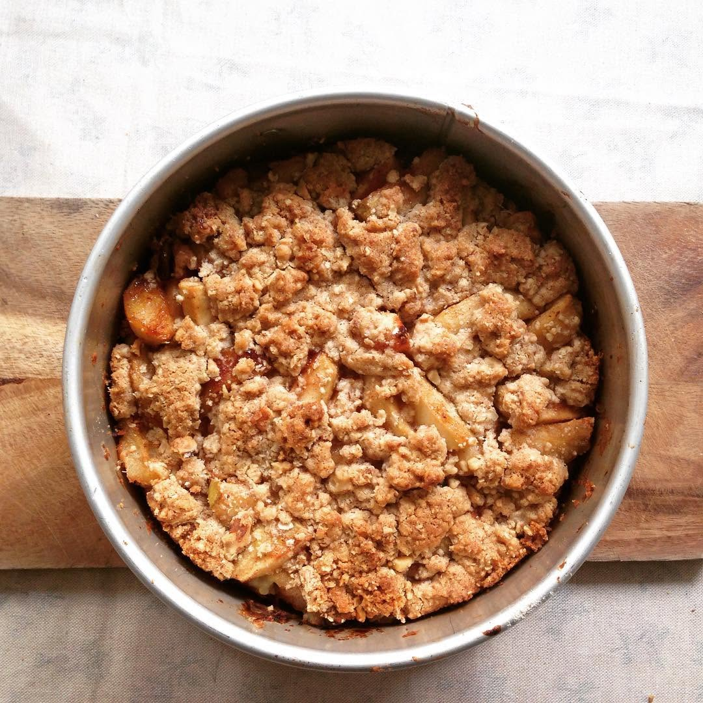

עוגת תפוחים נפלאה
פעם ראשונה בהיסטוריה שלי כאמא, סוף כל סוף הילדה הולכת ליום-כיף עם סבתא.
תחשבו על זה, ארבעה ילדים גידלתי בלי עזרת הורים. בכלל! בלי סבים בלי סבתות (דרך אגב, מתי אמרתם בפעם האחרונה תודה להורים שלכם שעוזרים? הא? מיד להתקשר. קיבלתם מתנה)
היום סוף כל סוף הבעש”ט לקח לאמא שלו את הקטנה (בת חמש וחצי).
“יא איזה כיף! נשארתי רק עם כלבה אחת ושמונה בנים בבית: הבכור, הצמחונישי והנצמד דה ט’ירד עם חבורה של בנים שנצמדה אליו “יאללה בואו נלך לגינה” אומרת להם ושולפת את כל פלוגת הרעש להסתער עם הקורקינטים על הגינה
הנייד מצלצל
“הי זאת אני” אומרת לי אמא שלו
“אני רק מעדכנת שלא קרה כלום, אל תדאגי. את חייבת לשמוע איזה דבר נהדר היה לנו, את לא מאמינה. העוזרת שלי כאן, עדינה, הו איזה אישה עדינה כשמה כן היא, מנקה כל כך טוב, 20 שנה ובחיים לא מצאתי טיפת אבק על אדן החלון. את מבינה מה זה?? לא דורשת כלום, לא מפריעה, לא שרה בקולי קולות כמו הקודמת ההיא שהיתה לפני 20 שנה, זאת שחשבה שהיא כוכבת של הספר מסביליה, היתה מרימה את הבית עם הרהיטים בקול רם, איזה אוקטבות גבוהות היו לה, כאילו היא על במה באופרה, הקפיצה לי את הלב והכוס קפה כל פעם מחדש, ואחרי ששטפה לא החזירה למקום, אבל עדינה הו עדינה, מנקה כל כך בשקט עדינה. והיום עדינה סוף סוף פגשה את הקטנטונת, כל כך הרבה אני מספרת לה על הנכדה שלי, וסוף היא זכתה לראות אותה”
וככה בזוית אני קולטת שהחפירה לא תיגמר, והילדים דופקים רייסים עם הקורקינטים
“איזה יופי לכם קוטעת אותה.. רק אני בגינה עם הילדים והם מתפרעים קצת, נדבר אחרי זה. אוקי? העיקר שכיף לכם”
נהנית מ10 דק’ של אספרסו ממריץ לב וילד ושוב הנייד מצלצל
” אני רק מעדכנת שלא קרה כלום. פשוט הקטנה הזאת גומרת אותי,
כמה חכמה איזה שכל יש לה זאת, ואיך היא דיברה יפה עם עדינה ועזרה לה יפה ככה עם הסמרטוט קודם במטבח ואז הם עברו לאמבטיה חרסינה חרסינה, ריבוע ריבוע ומשם לחדר איפה שאני תופרת, לא לפני שהיא הוציאה את כל הכפתורים, אוי זה מזכיר לי איך הייתי לוקחת את הבן שלי, הבעל שלך איתי לחנויות כפתור ופרח והוא היה מסתכל על זה בהתפעלות, כאילו נכנס לחנות צעצועים, אותו דבר הבת שלו, היא לגמרי שלנו, איך היא בודקת כל כפתור, כפתור גדול, קטן, כפתור מעץ…….”
“איזה יופי לכם” קוטעת אותה “שמחה שכיף לכם רק חייבת לחזור הביתה לבשל צהריים”
וככה אני בגינה ושוב פעם טרררר טרררר
“רק רציתי לעדכן שלא קרה כלום רק הקטנה אכלה כל כך יפה, קודם שתתה תה עם לימון (אני מתחממת) וליד זה ריבועים של פתי בר עם שוקולד (מתחממת עוד קצת עם התה), היא השאירה רק ריבוע אחד אחר כך היא אכלה מרק בובואים איזה 6 כפות ואז היא נורא ( רותחת!!!)..”
“איזה יופי לכם!!!” קוטעת אותה בעצבים
“אני כולי אושר שכזה כייף לכם!! בסדר לך??” היא בכלל לא קולטת את התדר הקצר שלי וככה מתקשרת עוד פעם ועוד פעם ועוד פעם
מעדכנת לייב מהשטח את אירועי “איד אל סבתא” החמים, לא פחות טוב ממורחי הזמן של ערוץ 2.
“הרגתי מישהו??” אני שואלת את עצמי “מה? כאילו לא מספיק פלוגות סער של קורקינטים המבעיתים לי את העיניים, הכלבה שמושכת לי יד אחת, הברברת בנייד ביד השנייה??
“איפה טעיתי???אדושם???”
ואז מבזיק לי רעיון עשירון עליון אני מתקשרת אליה ואומרת
“רק מעדכנת שלא קרה כלום, פשוט נכנסת עם הילדים לסרט, אז אכבה את הסלולארי לשעתיים, אם את רוצה לעדכן, תתקשרי לבן שלך”
היא צוחקת ואומרת..”נו?? מה את חושבת? שלא התקשרתי גם אליו כל פעם?? רק הוא אף פעם לא עונה לי”
“מה את אומרת???” הפיוז שלי קופץ “מעניין ממש העדכון האחרון שלך”
מתקשרת לבעש”ט. כולי הר געש . סטרומבולי. יורה
“רק מעדכנת שלא קרה כלום, אבל כל פעם שאמא שלך מתקשרת לעדכן אותי פרט פרט פרוטרוט שלא קרה כלום, אני מתקשרת לעדכן אותך פרט אחרי פרט שלא קרה כלום ודיר באלאק אם אתה לא עונה!! הבנת??”
“אז מה את אומרת לי בעצם, להחזיר את הקטנה הביתה?”
“במיידי!”
“קיבלתי, עבור!”
זהו נכנסת למטבח לפזר ריח טוב, שיחבר חזרה את הפיוזים שנשרפו..

עוגה טעימה ונימוחה כל כך, כייפית ליד קפה, לקחת לפיקניק או להביא לחברים. יש בה רסק תפוחים וגם תפוחים, והיא כולה ניחוח משגע של בית.
מצרכים
- 4 תפוחי גרני סמית, קלופים וחתוכים לקוביות קטנות
- 3 כפות סוכר חום או 2 כפות דבש
- 20 גרם חמאה רכה
- מיץ מחצי לימון
- כפית קינמון
- כף קמח
- 1–2 כפות קלבדוס, אם יש
- 2 כוסות ועוד 2 כפות קמח (אפשר קמח כוסמין)
- כף אבקת אפייה
- 3 ביצים
- כוס סוכר חום בהיר
- חצי כוס שמן צמחי
- גביע שמנת חמוצה או 3 כפות גבינת נפוליאון
- 3 כפות רסק תפוחים
- כף תמצית וניל איכותית
לשטרויזל
- 3 ביסקוויטים פתי בר או 2 כפות שיבולת שועל
- חופן קטן אגוזים
- 20 גרם חמאה
- כפית קינמון
- 2 כפות סוכר חום או לבן
- שקית סוכר וניל
אופן ההכנה
- מערבבים את קוביות התפוחים עם הסוכר או הדבש, החמאה, מיץ הלימון, הקינמון, כף הקמח והקלבדוס.
- טוחנים את מרכיבי השטרויזל בפולסים קצרים, עד לקבלת פירורים.
- מקציפים את הביצים עם הסוכר עד לקבלת קצף אוורירי.
- מוסיפים שמנת, רסק תפוחים ווניל. מוסיפים את הקמח בהדרגה ולבסוף את השמן.
- משמנים תבנית ויוצקים לתוכה את הבלילה. מפזרים מעל את קוביות התפוחים ללא הנוזלים, ומעליהן את השטרויזל.
- אופים בחום של 160 מעלות עד להזהבה.
לא להאמין כמה טעים.